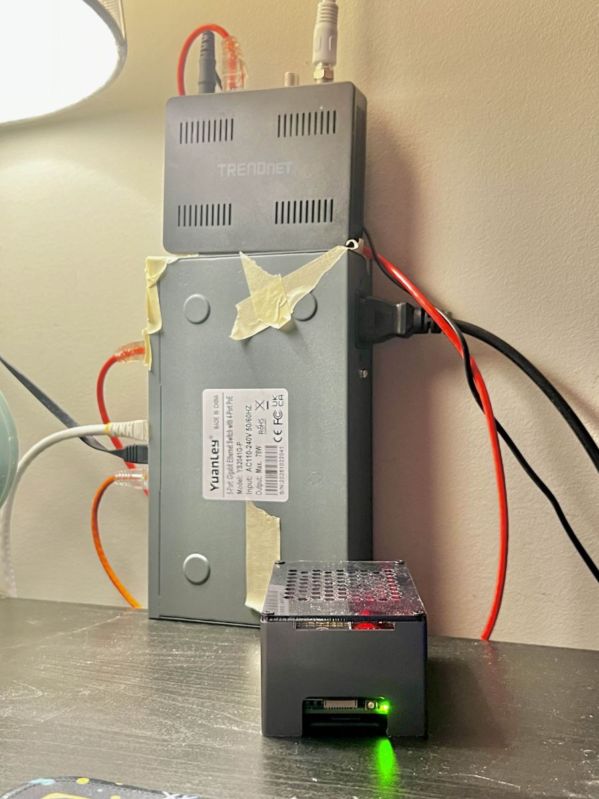
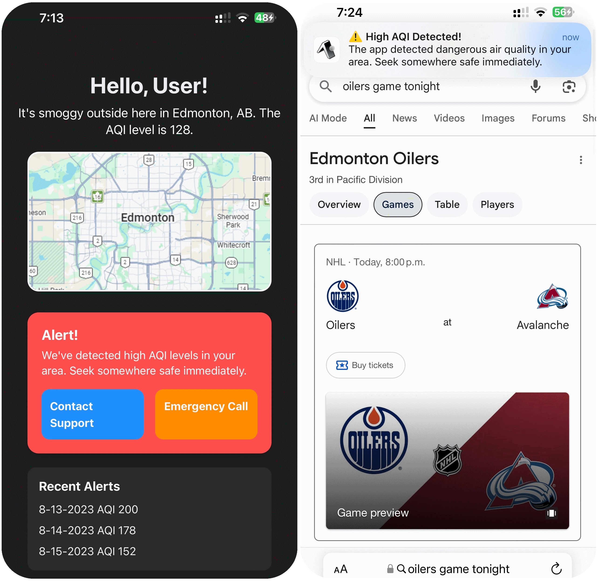
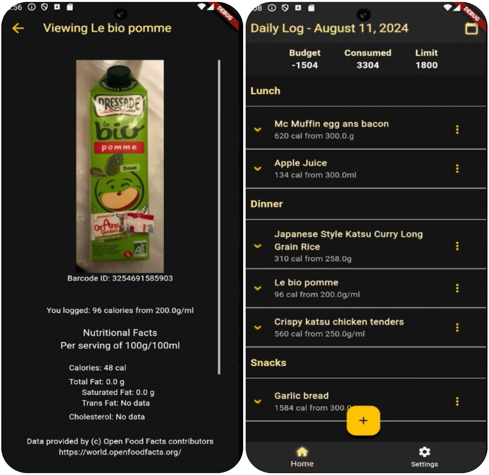
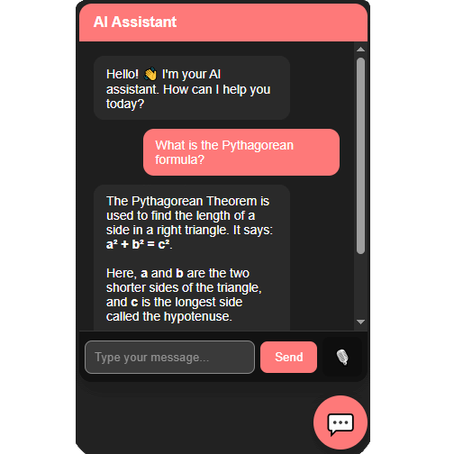
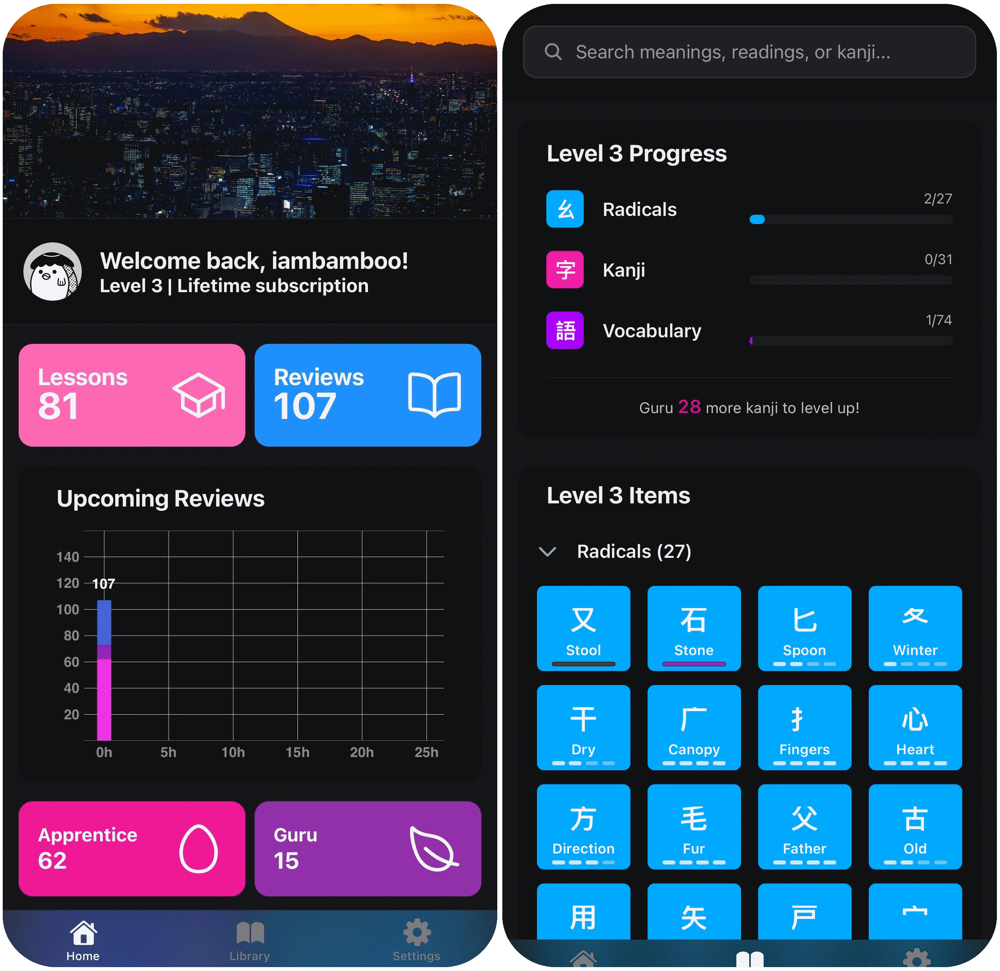

A fully self-hosted homelab running on Raspberry Pi hardware that hosts this website and a game server, using Docker containers and automated DNS management.

A real-time location-based air quality monitoring app providing modular UI components, push notifications, and health insights.
Image is a mockup. The real application cannot be shared due to capstone NDA restrictions.

A cross-platform Flutter mobile app that allows users to log meals, track daily calories, and manage nutritional goals using real food data from OpenFoodFacts API.

A full-stack AI chatbot assistant delivering real-time, age-appropriate responses using the OpenAI API and a multimodal pop-up interface.
Image is a mockup. The real application cannot be shared due to capstone NDA restrictions.

A React Native app for learning Japanese characters and vocabulary using the Wanikani API.